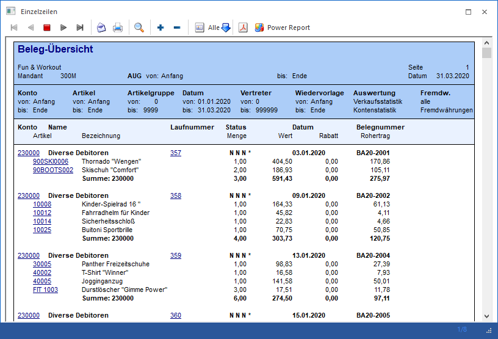
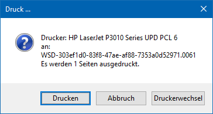
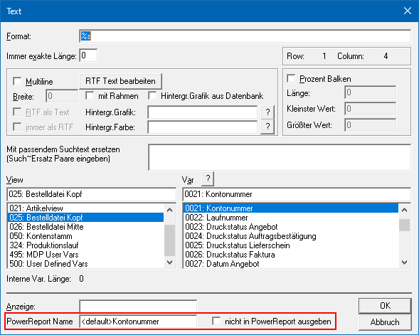

Wenn ein Druck auf den Bildschirm ausgegeben wird, so erfolgt die Darstellung mit Hilfe der Druckvorschau. Neben den DrillDowns bietet die rechte Maustaste und die Buttonleiste eine Vielzahl von Funktionen, welche in der Folge näher erläutert werden.

Ø DrillDowns
Wird in einem Bildschirmausdruck eine Information in blauer
Schrift und unterstrichen angezeigt (z.B.  ), so bedeutet dieses, dass durch Anklicken
dieser Information weitere Daten hervorgeholt werden können (der Mauscursor wird
zusätzlich als Hand
), so bedeutet dieses, dass durch Anklicken
dieser Information weitere Daten hervorgeholt werden können (der Mauscursor wird
zusätzlich als Hand  dargestellt).
dargestellt).
ü Linke Maustaste
Die zuletzt
gewählte Aktion / Funktion wird ausgeführt.
ü Rechte Maustaste
Abhängig vom
Objekt stehen diverse Funktionen zur Verfügung; z.B. kann bei einem
Personenkonto in die Stammdaten gewechselt oder die Statistik ausgegeben werden.
Bei Belegen stehen wiederum andere Möglichkeiten zur Verfügung. Grundsätzlich
speichert sich die WinLine die zuletzt gewählte Funktion pro Objekt ab und
stellt diese automatisch per linker Maustaste zur Verfügung.
Beispiel
Im Journal ist in jeder Buchungszeile die Buchungsnummer blau und unterstrichen. Klickt man eine Buchungsnummer an, erhält man alle Informationen zu diesem Buchungssatz - die Sachbuchung, die OP-Buchungen und die Kostenrechnungsinformationen.
Ø STRG + Bild-nach-Oben / Bild-nach-Unten
Innerhalb einer Druckvorschau kann mit Hilfe der Tastenkombination STRG + Bild-nach-Oben bzw. STRG + Bild-nach-Unten zwischen den Seiten geblättert werden, sofern mehrere Seiten vorhanden sind.
Ø STRG + ENDE / POS 1
Mit der Tastenkombination STRG + ENDE kann innerhalb einer Druckvorschau auf die letzte Seite gesprungen werden; mit STRG + POS 1 auf die erste Seite. Dieses ist natürlich nur dann möglich, wenn mehrere Seiten vorhanden sind.
Ø rechte Maustaste
Folgende Funktionen stehen über die rechte Maustaste zur Verfügung (nähere Information entnehmen Sie bitte dem Kapitel Die rechte Maustaste - Druckvorschau):
ü in die Zwischenablage
Mit
dieser Funktion wird der Inhalt des Bildschirmausdruckes (nur die aktuelle
Seite) in die Zwischenablage kopiert und steht dann in anderen Programmen (z.B.
MS Excel) zur Übernahme zur Verfügung.
ü Seite ausdrucken
Damit kann die
aktuelle Bildschirmseite direkt an den Drucker gesendet werden.
ü Speichern unter...
Mit dieser
Funktion kann der Bildschirmausdruck in einer Datei gespeichert werden, wobei
unterschiedlichste Formate zur Verfügung stehen.
ü Neuer Archiveintrag
Mit dieser
Funktion wird die Vorschau in das Archiv verschoben. Nachdem der Eintrag
erfolgreich archiviert worden ist, wird das Fenster "Dokumenten-Beschlagwortung"
geöffnet, in dem die Beschlagwortung hinterlegt werden kann.
ü Daten für Power Report
erzeugen
Mit Hilfe dieser Funktion kann definiert werden, ob die Daten für
den Power Report im Hintergrund aufbereitet werden sollen (siehe auch Button
"Power Report"). Die Speicherung erfolgt benutzerspezifisch pro Formular und
wird ab der darauffolgenden Ausgabe angewandt.
ü Formular bearbeiten
Jeder
Ausdruck in der WinLine ist frei definierbar. Wird ein Ausdruck am Bildschirm
gemacht, kann dieser unter Verwendung der Funktion "Formular bearbeiten" im
Formular-Editor umgestaltet werden.
Achtung
Diese Funktion steht nur Benutzern des Typs "Administrator" oder mit der Administratorenberechtigung "Formularadministrator" zur Verfügung. Außerdem kann die Funktion nicht über das Despoolen angewandt werden.
ü Blättern
Dieser Eintrag steht
nur dann zur Verfügung, wenn am Bildschirm ein mehrseitiges Dokument ausgegeben
wird. Damit kann zwischen den einzelnen Seiten geblättert werden (auch per
Tastenkürzel "STRG + Bild-nach-Oben / Bild-nach-Unten" bzw. "STRG + ENDE / POS
1" möglich).
ü Volltextsuche
Durch Anwahl der
Funktion "Volltextsuche" kann innerhalb des gesamten Dokuments nach einem
Begriff gesucht werden.
ü Zoom
Mit Hilfe der Funktionen
des Bereichs "Zoom" kann das am Bildschirm dargestellte Formular vergrößert oder
verkleinert werden.
Hinweis
Das Vergrößern bzw. Verkleinern ist auch über die Kombination STRG-Taste + Mausrad möglich.
Buttons
Ø Erste Seite
Es wird auf die erste Seite des Dokuments gewechselt.
Ø Vorige Seite
Es wird auf die vorherige Seite gewechselt.
Ø Abbrechen
Due Ausgabe wird abgebrochen- Je nach Ausgabe bzw. Auswertung wird die Druckvorschau hierbei geschlossen oder nur gestoppt.
Ø Nächste Seite
Es wird auf die nächste Seite gewechselt.
Ø Letzte Seite
Es wird auf die letzte Seite des Dokuments gewechselt.
Ø Mail
Wenn ein Mail-System auf dem Arbeitsplatz installiert ist, so kann der Ausdruck verschickt werden.
Hinweis
Sollten über das Steuerelement "AUX MAIL" des Formular Editor Vorgaben getroffen worden sein (Mailadresse, Mailbody, etc.), so werden diese beim Versand berücksichtigt.
Ø Dokument drucken
Es wird ein Druckerdialog geöffnet und der Drucker, welcher dem Formular zugeordnet, als Zieldrucker vorgeschlagen. Folgende Möglichkeiten stehen innerhalb des Dialogs zur Verfügung:

ü Drucken
Das Dokument wird an
den Drucker zum Ausdrucken gesendet.
ü Abbruch
Der Dialog und somit
der Ausdruck, wird abgebrochen.
ü Druckerwechsel
Es wird die
Windows-Druckereinrichtung geöffnet. Dort kann neben dem Drucker auch das Papier
und die Ausrichtung geändert werden.
Ø Zoom
Durch Anklicken der Lupe wird die ganze Seite am Bildschirm dargestellt - dadurch werden alle Elemente verkleinert. Es ist je nach Ausdruck auch möglich, eine zweiseitige Ansicht zu erhalten.
Ø zur Merkliste/Kampagne dazugeben
Durch Anklicken dieses Buttons können die Daten der Druckvorschau, gemäß der definierten Objektauswahl, zu einer Merkliste hinzugefügt werden. Der Button steht nur zur Verfügung, wenn innerhalb der Dokuments passenden Objekte vorhanden sind.
Ø aus Merkliste/Kampagne entfernen
Durch Anklicken dieses Buttons können die Daten der Druckvorschau, gemäß der definierten Objektauswahl, von einer Merkliste gelöscht werden. Der Button steht nur zur Verfügung, wenn innerhalb der Dokuments passenden Objekte vorhanden sind.
Ø Objektauswahl
Innerhalb der Druckvorschau werden viele Daten vorgehalten, welche ggfs. optisch nicht zu sehen sind. Hierzu gehört u.a. auch die Information, um was für ein Objekt es sich handelt, welches gedruckt wurde. D.h. die WinLine weiß, dass es sich bei der Nummer "230A001" um eine Kontonummer handelt und nicht um ein Projekt, wodurch eine Merkliste / Kampagne mit Inhalt gefüllt werden kann (siehe Buttons "zur Merkliste/Kampagne dazugeben" und "aus Merkliste/Kampagne entfernen").
Sobald der Button "Objektauswahl" aktiv dargestellt wird, wurden eines der folgenden Objekte innerhalb der Druckvorschau gefunden:
ü Konten
ü Artikel
ü Arbeitnehmer / Mitarbeiter
ü Projekte
ü CRM
ü Vertreter
ü Ansprechpartner / Kontakte
ü Benutzer
Zusätzlich steht das Objekt "Alle" zur Verfügung.
ü Objekt "Alle"
Wird der Bereich
"Alle" gewählt, dann werden alle Objekttypen, die in der Auswertung vorhanden
sind, in die Merkliste / Kampagne übernommen. Wenn ein Typ gewählt wird, der
nicht in der Auswertung vorkommt, dann wird automatisch auf den ersten
gefundenen Bereich zurückgeschalten. Ob entsprechende Daten gefunden werden,
hängt auch davon ab, welche Informationen im Formular angedruckt werden.
Beispiele
Wird in der Verkaufsstatistik
das Objekt "Arbeitnehmer" ausgewählt (der im Zusammenhang mit der Statistik
sicher nicht vorkommt), dann wird automatisch auf den ersten Objekttyp "Konten"
zurückgeschalten, auch wenn in der Statistik "Artikel" vorkommen und in die
Merkliste / Kampagne übernommen werden könnten.
Wird im Artikeljournal das
Objekt "Konten" ausgewählt, dann wird automatisch auf den Typ "Artikel"
zurückgestellt.
ü Objekt "Konten" bis
"Benutzer"
Es wird nur nach Objekten gesucht, welchem dem ausgewählten Typ
entsprechen. Die gefundenen Daten werden an die Merkliste / Kampagne
übergeben.
Ø Pdf / Druckvorschau
Bei Anwahl dieses Buttons wird die Anzeige innerhalb der Druckvorschau in eine PDF-Anzeige umgewandelt und dargestellt.
Hinweis
Diese Option wird benutzerspezifisch gespeichert, wenn die Fensterposition des Vorschaufensters zuvor gespeichert und das Fenster mit aktivierter PDF-Anzeige geschlossen wird.
Ø Power Report
Durch Drücken des Buttons "Power Report" wird die Druckvorschau grafisch dargestellt. Die Ausgabe ist individuell anpassbar und erfolgt in der Form von "Widgets", die unterschiedlichsten Darstellungen ermöglichen.
Hinweis
Die Daten sind immer abhängig von der Auswertung und dem zugrundeliegenden Formular, wobei folgende Punkte zu beachten sind:
ü Ausgabe
Die Mittelteils-Daten
des Dokuments werden zeilenweise ausgelesen und im Power Report zur Verfügung
gestellt. Eventuell nicht benötigte Zeilen (z.B. Überschriften) können per
"Widget Filter" ausgeblendet werden (z.B. über das Datenfeld "Flag").
ü Datenfelder
Es werden alle
"gedruckten" Variablen des Dokuments aufbereitet und an den Power Report
übergeben. Statische Texte stehen im Power Report (im Standard) nicht zur
Verfügung.
ü Text Variablen
Wurde in einer
Zeile des Dokuments eine Text Variablen mit Inhalt gefüllt (z.B. die Kontonummer
in einer Überschriftszeile), so wird diese Information immer automatisch in die
darauffolgenden Zeilen vererbt. Dieses geschieht so lange, bis sich im Dokument
der Inhalt der Text Variablen verändert (z.B. neue Überschrift mit neuer
Kontonummer).
ü Anpassung der Datenfelder
Mit
Hilfe des Formular Editors kann bei jeder Variable angegeben werden, ob diese
ggfs. nicht in den Power Report übergeben werden soll. Zusätzlich ist es möglich
den Namen für die Ausgabe in den Power Report anzupassen.

ü Weitere Datenfelder
Werden
weitere Datenfelder benötigt (Berechnungen, statische Texte, etc.), so können
diese im Formular Editor mit Hilfe des Elements "Formel" designed werden. Das
Ergebnis muss hierbei in eine benutzerspezifische Variable (View 500 - User
Defined Vars) abgelegt, sowie ausgedruckt werden. Für die Ablage stehen pro
Formular 100 numerische und 254 alphanumerische Variablen zur Verfügung.
Eine
andere Möglichkeit wäre das Implementieren des Steuerelements "SQL Ausdruck" per
Formular Editor. Mit Hilfe dieses Steuerelements können im Formular SQL-Abfragen
hinterlegt werden, deren Ergebnisse dann am Formular angedruckt werden können
(das Ergebnis wird automatisch in der View 500 ab Variable 100 zur Verfügung
gestellt). Somit stehen diese Informationen auch im Power Report zur
Verfügung.
ü Ausgabe auf Power Report nicht
möglich
Der Power Report steht im WinLine ADMIN grundsätzlich nicht zur
Verfügung. Des Weiteren ist eine Anwahl des Buttons nicht möglich, wenn es keine
Daten gibt oder die Erzeugung der Daten durch den Benutzer (siehe "rechten
Maustaste" - Funktion "Daten für Power Report erzeugen") oder einen
Administrator (per "Formular Editor" - Deaktivierung der Power Report-Ausgabe
bei allen Variablen) unterbunden wurde.